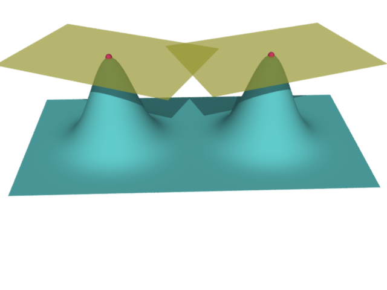
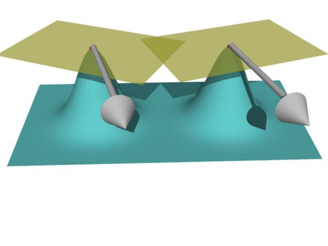

শুরুতেই tangent plane বিষয়ে একটা কথা বলে রাখি৷ আমরা আদৌ যে differential geometry করি, তার
প্রধান কারণই হল অনেকটা অন্ধের হস্তীদর্শনের মত৷ একটা বিশাল surface-এর বিভিন্ন জায়গায় বিভিন্ন মানুষ
রয়েছে৷ তারা কেউই পুরো surface-টা দেখতে পাচ্ছে না, অনুভবও করতে পারছে না৷ প্রত্যেকেই খালি তার কাছের
চারপাশটুকু দেখছে, ফলে প্রত্যেক্যের কাছেই মনে হচ্ছে যেন সে সমতলের উপরেই দাঁড়িয়ে আছে৷ অথচ এইরকম বিভিন্ন
লোকের অভিজ্ঞতা মিলিয়েই বোঝা সম্ভব surface-টা আসলে কীরকম৷ ঠিক যেমন পায়ের নীচে সকলেই পৃথিবীকে সমতল
ভাবতেই অভ্যস্ত, অথচ তাও যুক্তি-তর্ক দিয়ে বুঝতে পারি যে আসলে পৃথিবীটা গোল৷ সুতরাং differential geometry
শেখার পথে প্রথমেই যে চিন্তাটাকে বর্জন করতে হবে সেটা হল বিভিন্ন tangent plane-রা একই ${\mathbb R}^3$-র
মধ্যে রয়েছে বলে ভাবা৷ ওরা রয়েছে মানুষগুলোর মনে৷ প্রতিটা মানুষের মনে একটা করে tangent plane আছে৷
যেমন নীচের ছবিতে surface-টার দুটো সমান উচ্চতার চূড়া আছে৷ সেই চূড়ায় যে দুজন সন্ন্যাসী থাকে তাদের
প্রত্যেকের মনে একটা করে tangent plane আছে৷

${\mathbb R}^3$-এর অংশ হিসেবে ভাবলে দুটোই কিন্তু আসলে একই
plane. কিন্তু tangent plane হিসেবে ওরা সম্পূর্ণই আলাদা৷ কলকাতার লোক কখনো কোচবিহারের লোককে বলবে
না--ওহে তোমার tangent plane-টা সরাও তো, আমার কাঁধে খোঁচা লাগছে দেখছ না? এক
জায়গার tangent plane-এর অস্তিত্ব অন্য জায়গার লোকে অনুভবই করবে না৷ Tangent plane-রা
সকলেই একেকটা ${\mathbb R}^2,$ যেই বিন্দুতে সেটা tangent plane, সেখানেই তার origin.
এই ধারণাটা প্রথম প্রথম বড্ড গোলমেলে ঠেকে৷ ছোটোবেলা থেকেই শুনে আসছি যে vector-দের যদি সমান্তরালভাবে
সরানো হয়, তবে তারা একই vector থাকে৷ ওদেরকে triangle rule দিয়ে যোগ করার সময়ে হামেশাই আমরা
একটা vector-এর গোড়াকে সরিয়ে এনে অন্য vector-টার ডগায় লাগিয়ে দিই৷ অথচ এখন হঠাৎ বলছি
যে নীচের দুটো vector নাকি আলাদা--

এই কারণে আমরা নতুন আমরা একটা ভাষা ব্যবহার করব tangent vector. এরা হল একেকটা tangent plane-র
সদস্য৷ অনেকটা যেমন স্কুলে ছাত্রদের ক্লাস আর রোল নম্বর দিয়ে বোঝানো হয়, (VII, 23) এইরকমভাবে প্রত্যেকটা
tangent vector তৈরী হয় দুটো উপাদান দিয়ে, একটা বিন্দু এবং একটা তীরচিহ্ন৷ বিন্দুটা হল যেখানকার tangent plane-এর
সদস্য, আর তীরচিহ্নটা হল যেটা সেই বিন্দু থেকে আঁকছি৷ দুটো tangent vector-কে যোগ-বিয়োগ ইত্যাদি সবই করা
যায়, খালি যেন ওরা দুজনেই একই tangent plane-র সদস্য হয়৷ দুটো আলাদা tangent plane-র সদস্যদের
মধ্যে কোনো দেখাসাক্ষাত হবার প্রশ্নই নেই৷
মন্তব্য
নীচে একটা মন্তব্য দেওয়ার জায়গা রয়েছে. দেখে মনে হবে যেন তার জন্য আগে log
in করতে হবে. যদি তাতে আপত্তি থাকে, তবে ওই "Name"-এর জায়গায় একবার
click করলেই "I'd rather post as a guest" বলে একটা option আসবে.